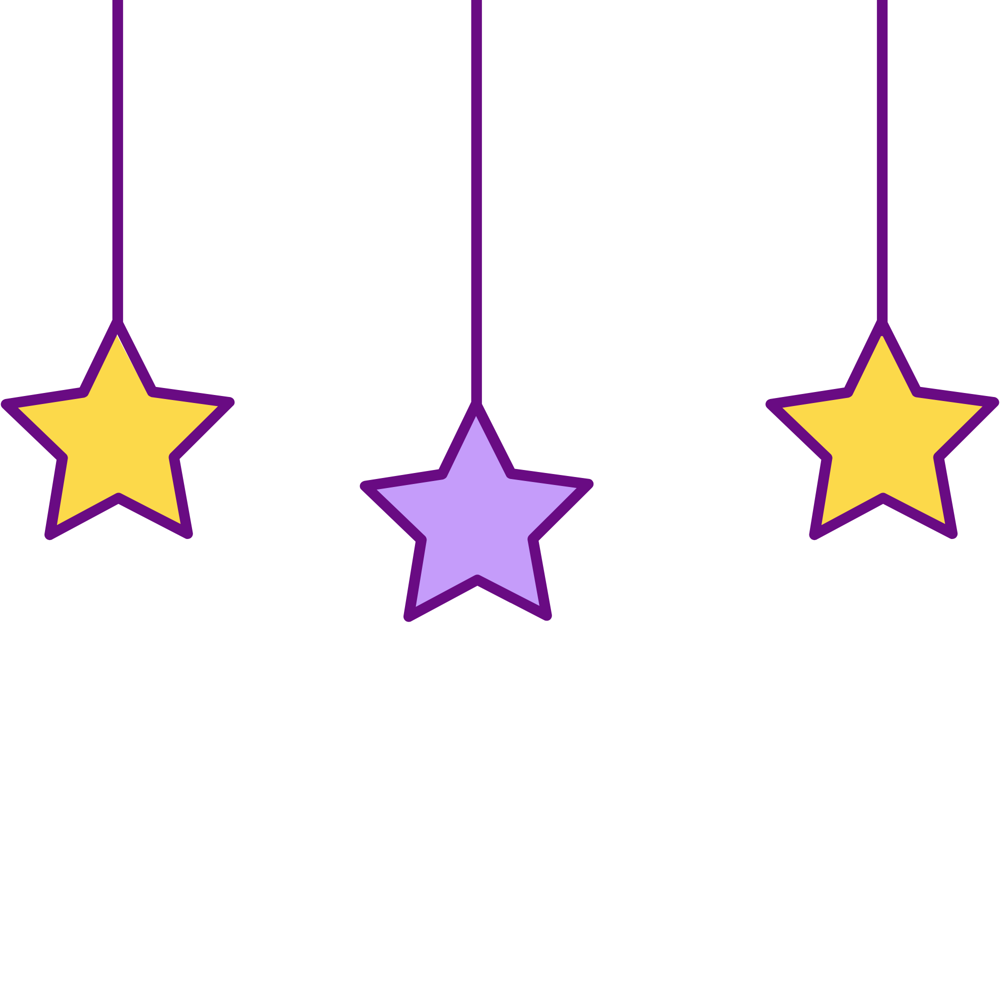

Civilizações antigas
Idade Média
Feudalismo
Renascimento
Reforma Protestante
1° Revolução Industrial
2° Revolução Industrial
3° Revolução Industrial
Revolução Francesa
Era Napoleônica
Imperialismo e colonialismo
Primeira Guerra Mundial
Revolução Russa
Segunda Guerra Mundial
Guerra Fria
História do Brasil: período colonial
Escravidão no Brasil
Independência do Brasil
Período imperial
República Velha
Era Vargas
Ditadura militar no Brasil
Redemocratização